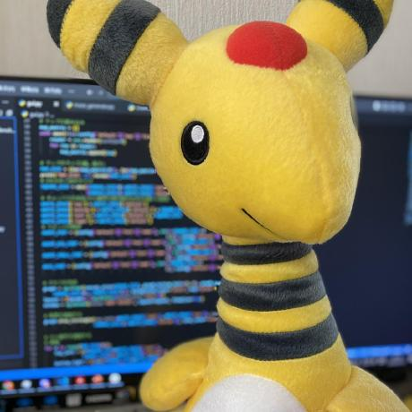

藤澤 陽祐 - Yosuke Fujisawa
> SunnyWist
Research Associate and Ph.D. student at Waseda University, Faculty of
Science and Engineering (as of 2025).
Research focuses on Multi-Agent Systems, including MAPF and DRL.
 GitHub
GitHubAbout
Affiliation: Waseda University, Faculty of Science and Engineering (Research Associate) / Ph.D. Student
Research Area: Multi-Agent Path Finding (MAPF)
Education: Master's Degree, Waseda University
Publications
-
Prioritized Path Planning for Multi-agent Pickup and Delivery with Multi-item Packing Problem
Yosuke Fujisawa, Yusaku Wakasugi, Kazuya Nakazawa, Ryo Matsubara, Toshiharu Sugawara - PAAMS 2025Research on path improvement for MAPD-MP with shelf transportation containing multiple items.
-
Deep Reinforcement Learning with Local Communications for Continuous Pathfinding Problems in Multi-Agent Systems
Yosuke Fujisawa, Daiki Shimada, Yuki Miyashita, Toshiharu Sugawara - WI-IAT 2024Research on Lifelong MAPF solver using deep reinforcement learning.
> Conference Papers
Tools
- Under Construction: ... GitHub Repository
Contact
E-mail: (See my papers)